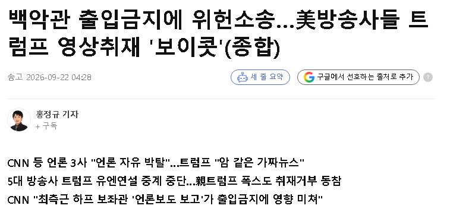

https://www.yna.co.kr/view/AKR20260921182351071
트럼프가 미국 언론 상대로 지랄한 거 때문에
미국 언론사들이 연대해서 트럼프 취재 및 보도를
보이콧 하겠다는 선언을 내놨다.
트럼프 옹호 측이던 폭스 뉴스도 동참하기로 한 모양.

https://www.yna.co.kr/view/AKR20260921182351071
트럼프가 미국 언론 상대로 지랄한 거 때문에
미국 언론사들이 연대해서 트럼프 취재 및 보도를
보이콧 하겠다는 선언을 내놨다.
트럼프 옹호 측이던 폭스 뉴스도 동참하기로 한 모양.
트럼프 병신
nba랑 wbc는 뭐하냐
폭스뉴스는머노?

폭스까지 ㄷㄷ
트위터까지 정지 당해야하는데 ㄲㅂ
진짜 개지랄을 떠나보네